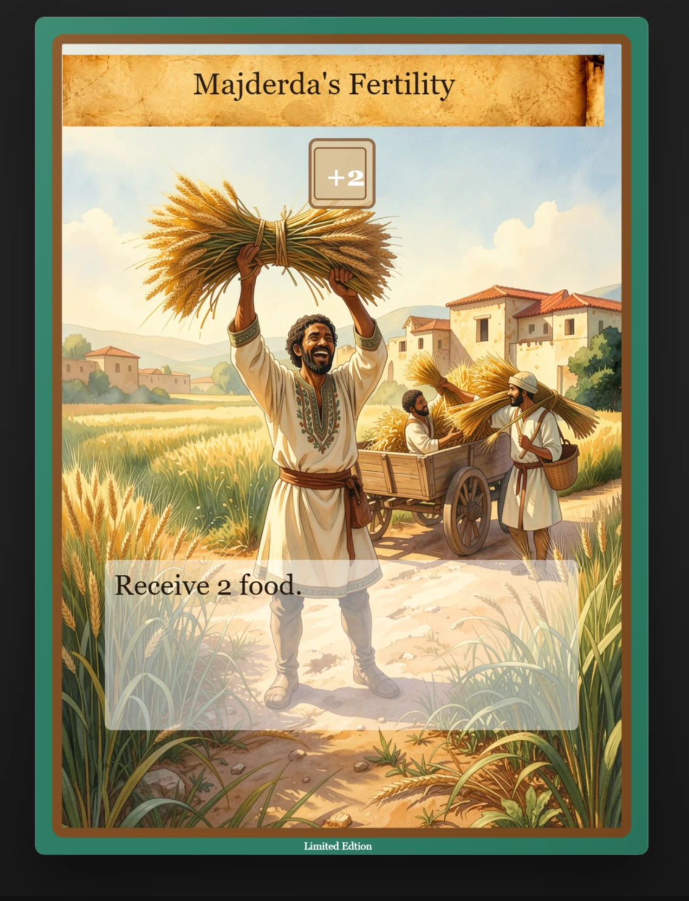
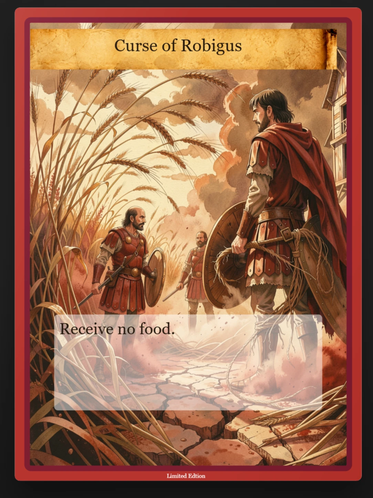
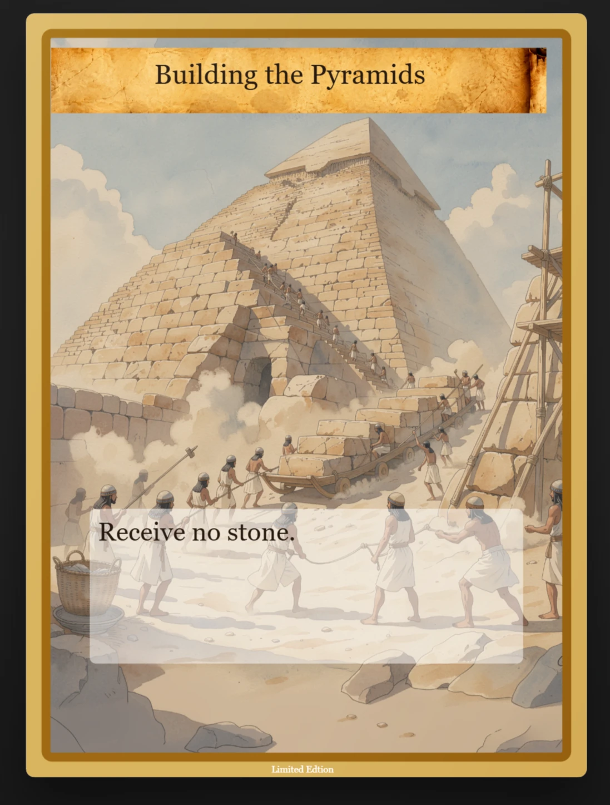

Visual system
Historical range within one readable language.
Each civilization needs a distinct atmosphere while every card still belongs to the same board game. Framing, typographic hierarchy, color coding, illustration treatment, and data zones create that shared grammar.
Production tool
A web app turns ComfyUI into a production line.
I built a dedicated web app around ComfyUI to control the complete card-image workflow. Central design profiles, templates, text areas, frames, and overlays keep all four civilizations visually consistent while still allowing each card to be edited individually.
Not every AI-generated image meets the artistic, physical, or print requirements. The app therefore keeps approved work intact while failed or unresolved images can be rejected, reopened, corrected, or selectively regenerated.
- 01Template consistencyShared design profiles, card-type templates, overlays, typography, frames, and backs provide a controlled visual baseline.
- 02Selective regenerationUnapproved images remain in the generation queue. Approved images are preserved, so a new run only retries the cards that still need work.
- 03Reviewable stateEach result can be approved, rejected, or reopened. The status is stored in the app instead of being lost between ComfyUI runs.
- 04Targeted correctionReference images, brush editing, object removal, and even 3D renders provide routes for fixing difficult motifs instead of accepting weak output.
- 05Print-ready finishFinal placement, overlays, localization, and PDF export keep the approved assets connected to physical card production.
Card anatomy
Image, story, and mechanics at one glance.
- 01Immediate categoryColor and symbols establish family and function.
- 02Illustrated eventThe central image carries the historical moment.
- 03Playable hierarchyName, effect, and values remain scannable at card scale.
Selected cards
Four moments from a larger world.




Production scale
Consistency must survive the 184th asset.
The work demonstrates system thinking at catalogue scale: enough constraints to keep the world coherent, and enough visual range to prevent the collection from feeling mechanically repeated.